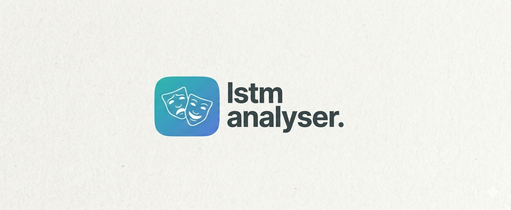
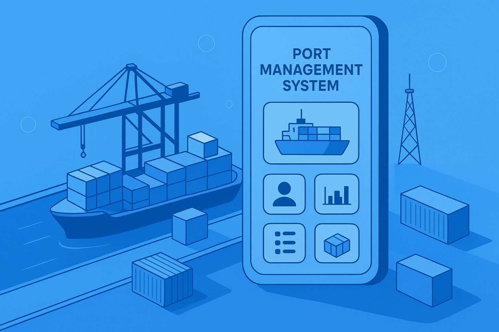

A curated collection of projects and case studies that demonstrate my approach to machine learning engineering, artificial intelligence, and system design. Each article explores the challenges, solutions, and insights gained throughout the development process.
Machine Learning
her.
An intelligent fashion assistant using Hugging Face models to help users choose the perfect outfit
her. is a machine learning project that serves as a personal AI stylist, leveraging free-use models from Hugging Face to analyse fashion preferences and provide personalised outfit recommendations. The application combines computer vision and natural language processing to understand user style and suggest clothing combinations.
Built with modern web technologies and AI frameworks, this project explores the intersection of fashion, technology, and personal expression through intelligent recommendations.
A conversational outfit recommender trained on Polyvore data
Given a garment you already own, curate. suggests what to pair it with; trained on the Polyvore dataset, treating outfit compatibility as a language modelling problem. A natural companion to her., built as a conversational interface rather than a catalogue.
An end-to-end solo-built system using YOLOv8 and DeepSORT to count people moving through an office environment in real time: tracking entries, exits, and persistent IDs across frames without double-counting. Surfaced through a Power BI dashboard backed by MongoDB.
PythonYOLOv8DeepSORTPostgreSQLPower BI

NLP · Deep Learning
LSTM Sentiment Analyser
A 2-layer LSTM trained on 25,000 IMDB reviews for binary sentiment classification, achieving 80% accuracy. Built end-to-end: custom tokenisation pipeline, embedding layer, and a FastAPI serving layer — now live on Hugging Face Spaces.
A decoder-only transformer built from first principles in PyTorch — attention heads, positional encoding, and all. Trained on Shakespeare's complete works as a character-level generative model, producing period-plausible prose.
PythonPyTorchTransformersGenerative
Bachelor's Projects
Earlier academic work
↓

Full-Stack Development
Port Management System
A full-stack port management application with a .NET 8 Web API backend, Entity Framework Core, PostgreSQL, and a modern Angular 18 frontend. Containerised with Docker for multi-container orchestration across development and production environments.